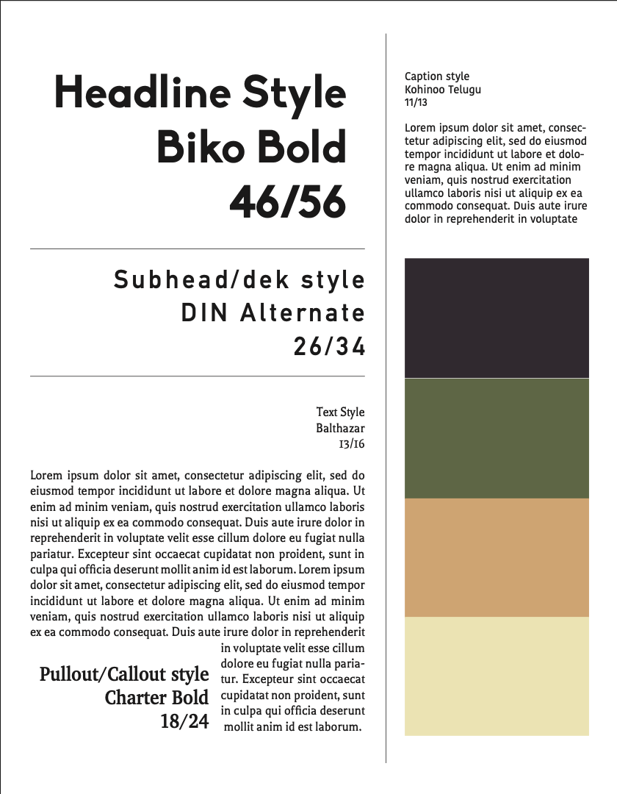
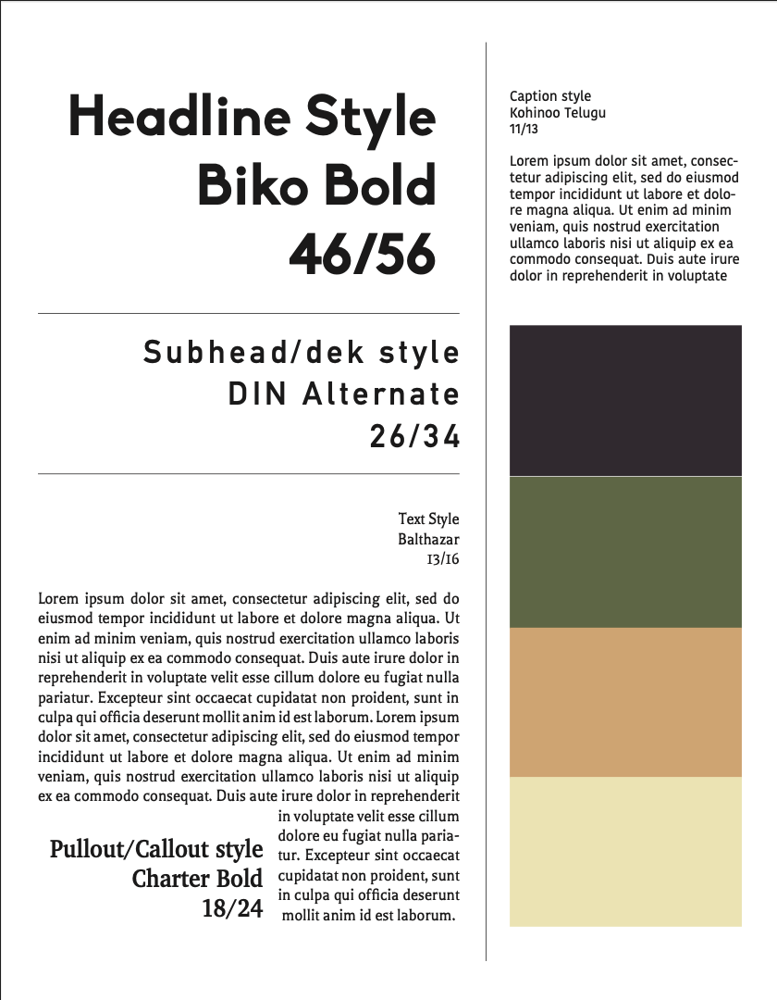

This project was for the Student Publication Design competition. I chose the theme of fashion and did a piece on "The history of the color black in Fashion.
Prototype magazine "Buzz" feature spread for Advanced Publication Design course. The feature was based off of a photo story titled "Haunting photos of small town America.
Cover, opener and some spreads from the April 2021 Vox Magazine Pandemic edition.
 

Protoype magazine "Buzz" work. Mockup cover, logo and fontbook
Protoype magazine "Buzz" work. Cover mockup and final choice and table of contents mockup.
Missourian covers for fall 2020.
For a fall 2020 Infographics course. A full page infographic about COVID-19 and mental health for college students. Collected the data designed the page.
Fall 2020 Infographics published in the Missourian.

The Winter Tourism Guide for the Missourian. Art directed and designed the entire 54 page magazine.